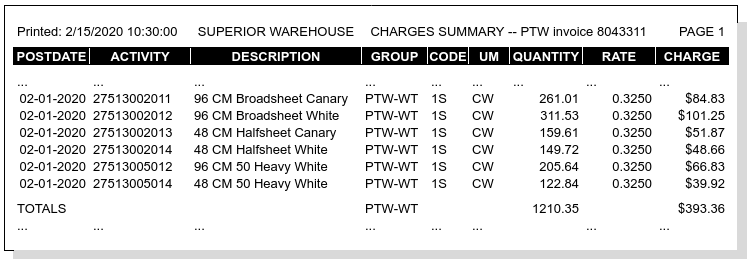

Recurring Calculation Audits¶
Recurring Reports¶
Recurring calculations produce two audit trails. The Stock Activity Audits details inventory stock movement during the recurring period, resulting in a quantity balance to be billed. The Recurring Charges Audits lists charges billed for the quantity balance.
The customer should receive both reports with the recurring storage invoice, one report for inventory management and the other for accounting.
Note
Inventory may be tracked by unit, lot, or product, but the stock activity is reported by lot or product using the units of the storage charges. Then charges are summarized and reported by product only.
Recurring Charges Audits¶
Recurring charges are always audited with the Charges Summary report, as shown following.
Note
Each row of this report lists charges for one product identifier/variety combination. The Activity column contains the product identifier; the Description shows the product description, not the charge description.
Stock Activity Audits¶
Billing quantities for stock activity and balances are captured with the Stock Activity Audit. This report is divided into two sections: identifying information for each item on the left, and quantitative data on the right.
Example identifying information for the Stock Activity follows:

Columns for the report identifier section are:
| Column Name | Description |
|---|---|
| AUDIT | (heading) Calculation Batch Number |
| RUN DATETIME | (heading) Date Time batch started |
| ACCOUNT | Customer Account Code |
| UOM | Billing Quantity Unit of Measure |
| PRODUCT | Product Code Identifier |
| VARIETY | Variety Code, if used |
| LOT | When tracking lots, the Lot Number |
AUDIT and RUN datetime apply to the entire report, and so these items appear in the report identifier section heading.
Activity Quantitative Data¶
The Quantitative data listed below matches the identifiers section presented above:

Again, calendar range STARTING and ENDING apply to the entire report and so these items appear in the data section heading. All data columns are listed below.
| Column Name | Description |
|---|---|
| RANGE STARTING | (heading) Calendar Starting Date |
| RANGE ENDING | (heading) Calendar Ending Date |
| START DATE | Lot Anniversary Starting Date |
| ON HAND | Lot Balance on Starting Date |
| RECEIVED | Quantity Received during Period |
| SHIPPED | Quantity Shipped during Period |
| ADJUSTED | Quantity Adjusted during Period |
| ENDING BALANCE | Lot Balance at Period Ending Date |
| END DATE | Lot Anniversary Ending Date |
For a lot to be included in a particular recurring calculation batch, the lot anniversary END DATE must fall within the RANGE STARTING to ENDING bracket of the calculation batch. Lot anniversary START DATE and END DATE values are determined by the account’s recurring calendar, and by the account’s recurring configuration.
Period Transaction Reporting¶
The Received, Shipped, and Adjusted columns of an Activity report are based on the inventory transactions posted in the period. A transaction detail report may be produced to audit the Activity Report.
Recurring Calculation Methods¶
Recurring balances may be determined either by calendar periods or by lot anniversaries.
Calendar Period Recurring¶
Where an account’s recurring balances are calculated by calendar period, all lots for the account will use the same anniversary starting and ending dates. The lot anniversary dates are determined by the account’s recurring calendar. The next date of that calendar must fall within the RANGE STARTING and RANGE ENDING calculation bracket, or else the account is excluded from the recurring batch. The lot anniversary START DATE will be one day greater than the last date of the account’s recurring calendar, and the end date will be the next date of the account’s calendar.
Once lot balances are calculated, there are two options for determining charges with calendar recurring: using ending balances (advance billing), or using starting balances (arrears billing). There are a few southern warehouses still clinging to this option, and so WARES supports it even though arrears recurring is deprecated.
Anniversary Recurring¶
Where balances are calculated by anniversary, the lot anniversary ending date will be the anniversary month day which falls within the calculation starting and ending dates. Anniversaries may be calculated for any portion of a month, and only lots with anniversaries within that portion will be included in the calculation.
Where anniversary recurring is specified, an ending date must be bracketed by the calculation starting and ending dates. The lot’s anniversary starting date will be the equivalent day in the previous month.
Lot Anniversaries¶
The date a lot of goods is received into the warehouse is the starting date for calculating anniversaries. When an account has free days, the free days add to the starting date to determine anniversary dates. The first anniversary occurs at the expiration of free days, when receiving storage is applied. Recurring storage is applied for all subsequent anniversaries.
Anniversaries and free days may cause confusion in that months do not all have the same number of days. The following chart should clarify this situation:
| Receive date | Free days | First anniversary | Second anniverary |
|---|---|---|---|
| January 15 | 5 | January 20 | February 20 |
| January 28 | 0 | February 28 | March 28 |
| January 29 | 0 | February LAST | March 29 |
| January 28 | 3 | January 31 | February LAST |
| February 29 | 0 | March 29 | April 29 |
| February 26 | 3 | March 1 | April 1 |
| February 26 | 3 | February 29 [1] | March 29 [#]_ |
| [1] | In a leap year the first anniversary would be February 29, followed by March 29. |
Recurring Calculations¶
Recurring calculations are
Recurring charges are based on a Stock Activity Audit. This report is a permanent record of the inventory changes during a recurring period, resulting in the balances used for recurring charges. The Stock Activity Audit determines the starting balance of inventory, accumulates transactional changes from receiving, shipping, and adjusting, and calculates a corresponding inventory ending balance.
Recurring Activity Issues¶
Several factors can complicate recurring storage calculations:
- The units of measure for recurring storage can be different from the stock units which track inventory movement.
- Recurring may be based on calendar periods, or on lot anniversaries.
- Accounts may specify custom period dates for recurring accounting.
- Recurring may be calculated by month, or by alternative time periods such as daily, weekly, or bi-weekly.
- Inventory movement may be tracked by unit, lot, or product.
- Accounts may be offered free days affecting the starting date for applying storage charges or calculating anniversaries, as well as requiring the accumulation of both receiving and recurring charges during recurring calculation.
- Damaged goods are included in recurring storage but not reported in available inventory.
Calculation Requirements.
Recurring Process¶
Recurring selects inventory lots by account by rate group by product by lot. First the Inventory Balances Posting is created for the selected inventory records, then a recurring charges record is created for the balance of each product or lot being tracked. Recurring is calculated by selecting accounts from the recurring calendar list, then calling a routine to create an inventory activity audit and apply recurring storage charges to the resulting ending balances.